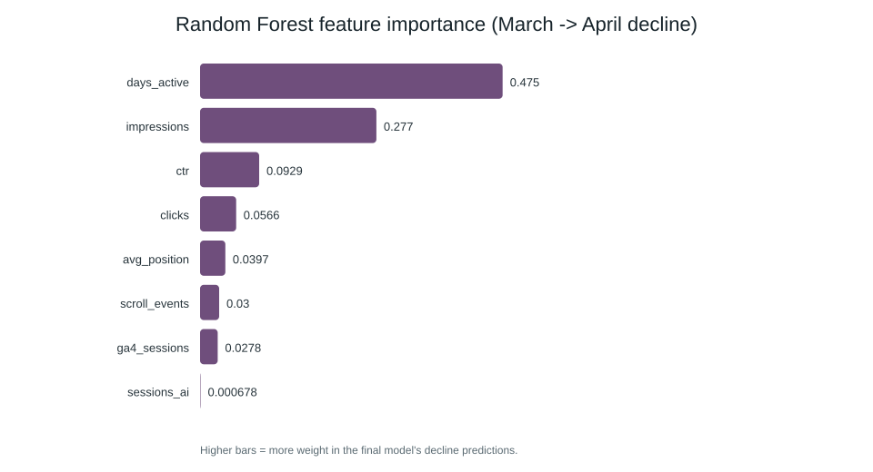
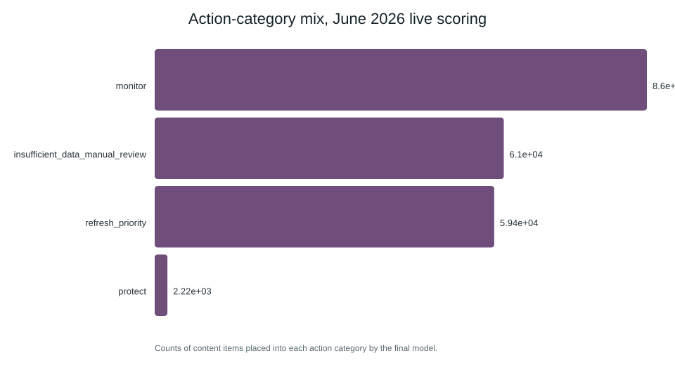

Abstract
This paper asks which content items are worth prioritizing for manual refresh review, using only search-performance signals a team could observe at decision time. A transparent rule-based baseline and a Random Forest model were built on eight decision-window features aggregated from one month of the FlyRank internship warehouse. The label was defined as an observed decline in the following month's search impressions, and both were evaluated on a client-holdout split — so no client's pages could appear in both training and test. The model reached a precision@50 of 0.86 versus 0.70 for the baseline rule, and held at 0.86 on a fully sealed, untouched future month never used during development. The result is presented as an observed, decision-support signal for ranking review priority, not a causal explanation of why any individual page's performance moved.
1. Introduction
A content or SEO team with limited time cannot manually review every page every month. The practical decision this work supports is narrow but useful: given a list of content items and what is already known about their recent search performance, which ones should go to the top of the review queue this month?
The lane is Refresh / Content Opportunity Scoring: score pages that are growing, declining, recovering, or worth review, and output a ranked action engine with reason codes a human can trust and act on.
2. Data
Built on the FlyRank/internship-warehouse release (Hugging Face, gated), table
fact_content_daily_performance, at a grain of one row per
report_date × client_hash_id × content_hash_id.
Rows without a reliable GSC signal (gsc_data_available is not TRUE) were
excluded. Only three GA4 enrichment columns (ga4_sessions, AI-referral session
counts, on-page scroll events) were kept alongside the core GSC columns — the feature set was deliberately kept
compact rather than using every available column. Only hashed client and content identifiers
are used anywhere in this pipeline; no domains, URLs, or client names ever leave the
warehouse query.
3. Methodology
Label
future_decline = 1 if a content item's summed impressions in the outcome month
are lower than its summed impressions in the decision month, else 0. This is an
observed proxy for "would have benefited from review" — it says nothing about
why impressions moved.
Features
Eight aggregates, computed from the decision month only, never mixed with outcome-month data:
| Feature | Knowable at decision time because… |
|---|---|
impressions | summed GSC impressions, decision month only |
clicks | summed GSC clicks, decision month only |
avg_position | mean GSC average position, decision month only |
ctr | decision-month clicks ÷ decision-month impressions |
ga4_sessions | summed GA4 sessions, decision month only |
sessions_ai | summed AI-referral sessions, decision month only |
scroll_events | summed on-page scroll events, decision month only |
days_active | count of decision-month rows with any GSC/GA4 data |
Identifiers (client_hash_id, content_hash_id) are used only to join and group rows — never passed to a model as a feature.
Baseline
A transparent rule: flag an item if it already earns real visibility (impressions at or above
the population median) but wastes it — sitting off page one on average
(avg_position ≥ 10) or converting visibility into clicks worse than a typical
visible item (ctr below the median among visible items). Score is sized by raw
impressions, so high-traffic underperformers outrank low-traffic ones with the same flags.
Reason codes: visible_weak_position, visible_low_ctr,
general_refresh_review, not_visible_enough.
Model
Logistic Regression as an interpretable reference, and Random Forest (300 trees, max depth 6, fixed seed) as the final model — chosen for handling the non-linear interaction between position, CTR, and impressions that a linear model misses.
Validation design
Client-holdout split (grouped by client_hash_id, 80/20, seed
fixed): a client's pages never appear in both train and test. This choice is directly
justified by the leakage audit below, which measured the cost of skipping it.
Leakage audit
Every check below passed on the final 8-feature set: features are aggregated only from the decision month; the label is built from a separate, later query and never included as a feature; identifiers are excluded from the feature list; all reported numbers use the client-holdout split.
4. Results
Split matters — measured, not assumed
Same March→April data, same Random Forest, two different splits:
| Split | Precision@50 | Client overlap |
|---|---|---|
| Random row split | 0.96 | 45 clients |
| Client holdout split (used everywhere below) | 0.86 | 0 |
The random split let 45 clients appear in both train and test, inflating precision by roughly 10 points. Every other number in this paper uses the honest, client-holdout split.
Baseline vs. model, same split
| Model | Precision@50 |
|---|---|
| Baseline rule | 0.70 |
| Logistic Regression | 0.84 |
| Random Forest (final) | 0.86 |
Test-split base rate: 66.2% of items declined the following month. The model's lift over "always guess decline" is real but moderate, not dramatic — consistent with the honest framing this paper aims for.

avg_position and ctr dominate — the model rediscovered roughly the same signal the baseline rule was hand-built on, then combined it more precisely.Sealed test: May 2026 → June 2026 (run once)
Where the model is wrong
Confident-but-wrong predictions cluster around items with avg_position hovering
between 9 and 11 — exactly the page-one/page-two boundary where both the fixed rule
threshold and the model's own decision boundary are least stable. Items in this band should be
treated as lower-confidence flags, not auto-actioned.
5. Limitations & honest framing
- This is an observed, decision-support signal — not a causal claim, and not a prediction of Google's ranking algorithm.
- The label is an impressions-based proxy for decline; it does not know why a page's performance moved (content quality, a SERP feature change, seasonality, a competitor).
- The 8-feature set intentionally omits content-characteristic data (word count, topic, freshness) not present in this warehouse table — the model sees search-behavior signals only.
- Precision@50 = 0.86 is measured against a 59–66% base rate, so the honest lift over guessing is real but moderate.
- 61,029 items (June 2026) fall below a 20-impression noise floor — this method has nothing reliable to say about low-traffic content.
6. Ranked recommendations
Applying the final model to June 2026 (decision-window only — forward-looking, no label yet) produced this action mix across 208,636 scored items:

Intended use and limits
For a content/SEO lead deciding where to spend limited review time this month — not an auto-publish pipeline. Action thresholds (0.66 / 0.40) are fixed cutoffs chosen for readability, not tuned to any specific team's review capacity.
No-go list — never auto-act on
- Anything below the 20-impression noise floor (61,029 items) — too sparse to trust.
refresh_priorityitems withavg_positionbetween 9 and 11 — the model's least stable region.- A single client's top-ranked items viewed in isolation, without checking whether that client's whole portfolio is skewed.
Monitoring / retrain trigger
Re-run monthly as each new decision/outcome pair closes out. If precision@50 on a fresh month drops meaningfully below the 0.86 dev/sealed-test benchmark, or the action-category mix shifts sharply without an obvious cause, treat that as a signal the scoring rule needs review.
7. Reproducibility
- Repository: github.com/Hanizakkk/flyrank_working-repo
- Full pipeline (data query through ranked output) run once against the live warehouse in Colab; results captured in
work/outputs/*.jsonand mirrored with real output in the assignment notebooks below - Assignment notebooks:
work/notebooks/w04_baseline_score.ipynbthroughw07_action_playbook.ipynb, andwork/notebooks/capstone.ipynb - Result artifacts:
work/outputs/*.json,work/outputs/ranked_recommendations_sample.json - Charts:
work/figures/*.svg - Random seeds fixed throughout (
random_state=42) for reproducible splits and model training.